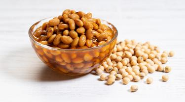

 Tauco adalah bumbu makanan yang terbuat dari biji kedelai (Glycine max) yang telah direbus, dihaluskan dan diaduk dengan tepung terigu kemudian dibiarkan sampai tumbuh jamur (fermentasi). Fermentasi tauco dengan direndam dengan air garam, kemudian dijemur pada terik matahari selama beberapa minggu sampai keluar aroma yang khas tauco atau rendaman berubah menjadi warna coklat kemerahan. Pada pertengahan prosesnya, rendamannya sering mengeluarkan bau yang menyengat seperti ikan busuk/bau terasi. Dari beberapa produsen tauco tradisional mengatakan bahwa hasil rendaman, air rendamannya itulah diolah menjadi kecap sedangkan biji kedelainya menjadi tauco. Terdapat berbagai cara mengolah tauco yang masing masing memiliki keistimewaan tersendiri. Contoh tauco yang beredar di daerah Riau berbeda dengan tauco dengan di daerah Jawa dan Kalimantan. Tiap daerah memiliki keunikan cita rasa tersendiri. Dari pengalaman, tauco dapat disimpan lama sampai bertahun tahun, dan tidak akan rusak atau basi selama penyimpanannya tidak terkena air mentah ataupun terkontaminasi dengan bahan organik lainnya. Sayang, tidak ada penelitian yang lebih terperinci mengenai tauco. Oleh para buruh kasar (khususnya masyarakat Tionghoa) dibeberapa daerah, tauco digunakan sebagai lauk setiap makan terutama saat makan bubur bening. Penggunaannya yang umum adalah sebagai bumbu atau penyedap dalam membuat lauk pauk, misalnya ayam bumbu tauco, nasi goreng tauco, ikan tumis tauco Tauco adalah bahan makanan yang biasa dikonsumsi oleh masyarakat Indonesia. Tauco mengandung energi sebesar 166 kilokalori, protein 10,4 gram, karbohidrat 24,1 gram, lemak 4,9 gram, kalsium 55 miligram, fosfor 365 miligram, dan zat besi 1 miligram. Selain itu di dalam Tauco juga terkandung vitamin A sebanyak 23 IU, vitamin B1 0,05 miligram dan vitamin C 0 miligram. Hasil tersebut didapat dari melakukan penelitian terhadap 100 gram Tauco, dengan jumlah yang dapat dimakan sebanyak 100 %.